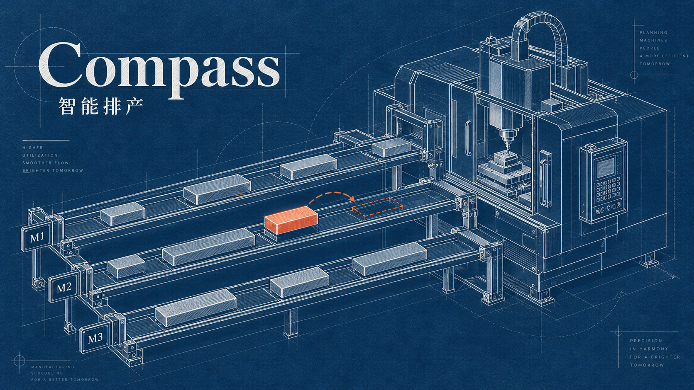

工业智能语义基座（新窗口）
让算法给出结论时，工程师仍看得见证据、留得住判断。
服务方向
Hi, I'm Mo Xiuwen
过去两年，我参与工业 AI 产品的业务梳理与方案设计，重点解决数据处理和质量分析中的问题：哪些重复工作可以交给 AI，哪些关键步骤需要人确认，分析结果怎样供工程师核对。也通过独立 AI 项目，实践需求定义、原型制作和功能验证。
让算法给出结论时，工程师仍看得见证据、留得住判断。

从接单判断到计划调整，让生产安排有据可查

把长会议整理成可回查的纪要。让会议里的重要信息，留下来，也找得到。

在 Claude Code 和 Codex 之间切换，也能接着上次的决定继续做。

连接科研项目的目标、经费与交付。

把分散的能力，组织成一条可构建的 Agent 路径。

从散落的数据，走到可以理解的业务关系。

让 AI 主动联系有分寸：记得要跟进的事，也懂得在未获回应时停下。

从想法到可交互实物，把养成体验做进掌心。
Design / Visual Practice
三维、动态与大屏作品
按主题浏览
用造型、空间与运动，让想法有形，让界面有回应。
把分散数据组织成清晰态势，支持快速研判与指挥调度。
About / 莫秀文
我关注 AI 如何在真实业务中发挥作用：
先理解用户要完成的任务和现有流程，再判断哪些环节适合交给 AI、哪些决定需要由人掌握，把需求转成清楚的产品目标与方案。
从方案到可用：
我重视数据与技术条件、效果验证，以及出错时的处理方式，通过原型和实际反馈推进迭代。设计积累帮助我组织复杂信息，把 AI 的能力、边界与反馈呈现成容易理解和使用的体验。
从想法，到现场电子鱼塘 · 分享记录
持续构建与验证跨 Agent 上下文、会议整理、桌面 AI 与轻量硬件体验。
参与语义平台、质量分析 Agent、智能体平台和研发管理系统，负责交互与产品体验。
通过政务、社会治理和矛盾调解类产品，积累多角色协作与复杂业务交互经验。
建立视觉与交互基础，逐渐把关注点从“界面如何呈现”扩展到“产品为何这样工作”。
Beyond the Screen
走进科技展，看看新技术怎样被用起来；与创客交流，把想法放进讨论里。也通过插画，把观察与想象变成具体的表达。
Get in Touch
欢迎交流 AI 产品岗位、项目合作，以及有意思的产品想法。
m1941696989@gmail.com邮件可直接打开你的邮件应用，也可以复制地址联系我。